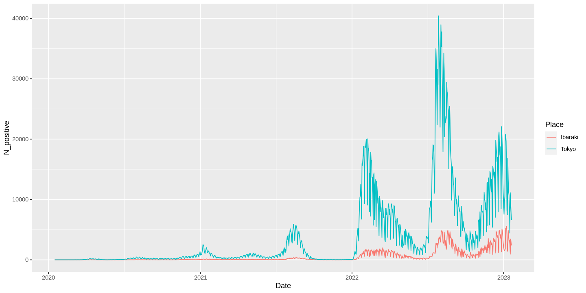
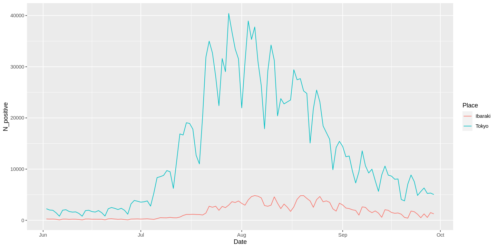
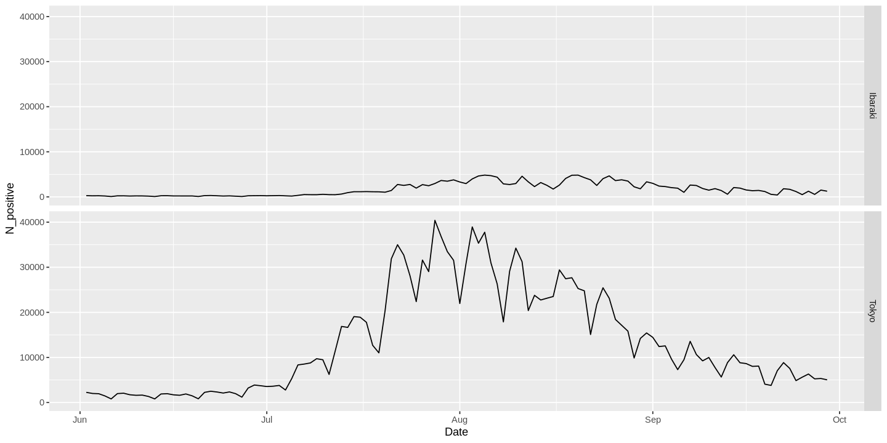
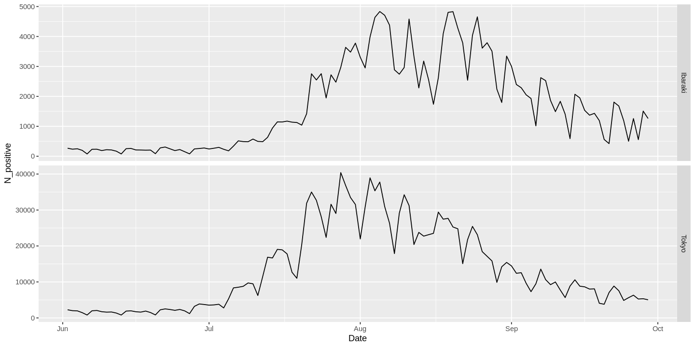
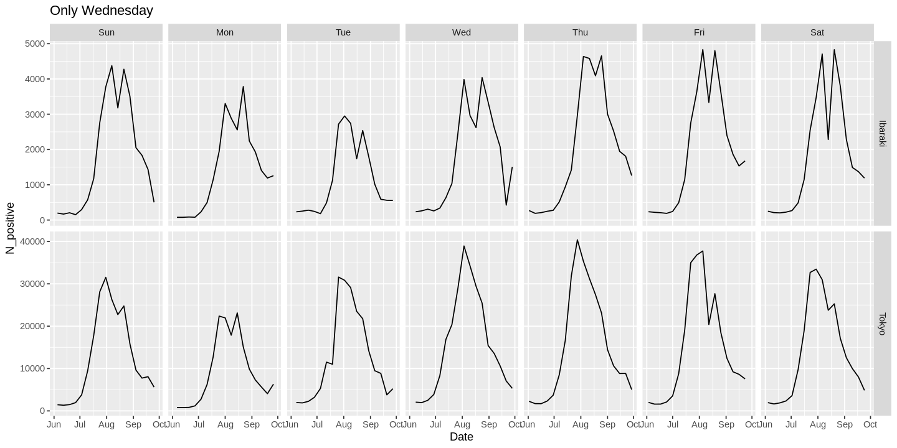

演習B：手順1
概要
- 演習Aに引き続き、
newly_confirmed_cases_daily_20220121.csvを分析します。 - 方法
- まず、Jupyter Hub で新たに R のノートブックを作成し、
B_01との名前をつけましょう - 次に、以下の、Rのコードを、コピーし、実行しましょう。
- まず、Jupyter Hub で新たに R のノートブックを作成し、
必要なパッケージ（拡張機能）の読み込み
library()関数を使うtidyverseはデータフレーム系の処理が便利なパッケージ
library(tidyverse)
lubridateは日付のデータを扱うのに便利なパッケージ。
library(lubridate)
ファイルの読み込み
read_csv()コマンドを使うcol_names=TRUEはファイルの１行目がヘッダー行（列名が書いてある）であるという指定
df1という名前のオブジェクトに読み込んだデータをデータフレーム（表）として代入
df1 <- read_csv("data/newly_confirmed_cases_daily_20220121.csv", col_names=TRUE)
読み込んだファイルの中身の確認
head()関数は、オブジェクトの最初の数行を出力に表示してくれる- ファイルを読み込んだ後はこのように中身を確認することで、意図通りのデータ構造になっているか、文字化けがないかなどを確認できる
head(df1)
列のデータ型（クラス）の変更
- 直上で
Dateという列の下に<chr>と書いてある。これはこの列が「文字列（character)」というデータ型になっていることを示している。 mutate()コマンドは列を追加したり、別の列に入れ替えたりできる。- ここでは、
Date列の内容をas_date()という関数で「Date（日付）」型に変換した上でDate列を書き換えている - → 結果として、再び
head()コマンドで中身を確認した際にはDate列のところに<date>と表記される（先ほどは<chr>だった）。これにより、 「Date（日付）」型に変換されたことが確認できる。
- ここでは、
パイプ記号 (%>%) について
- Rでのデータ解析では複数の関数を順繰りに適用していくことが多い。
- つまり、ある関数の出力を別の関数の入力にすることを繰り返す。
- この際、関数を入れ子にした書き方だと読みづらい
- 例えば、
f(),g(),h()という関数をxというオブジェクトにかけるとすると、h(g(f(x)))
- 例えば、
- そこでパイプ記号 (
%>%)を用いることで読みやすくする（可読性を高める）。- パイプ記号の左側が入力で、右側が出力になっている。
- 上の例では、
f(x) %>% g() %>% h()といった書き方ができる
- オブジェクト自体をパイプ記号 (
%>%)の左側に置くこともできる- 上の例では、
x %>% f() %>% g() %>% h()といった書き方ができる
- 上の例では、
- パイプでつながった部分はひとまとまりと（Rに）解釈される
- 上の例では、最終的な出力を
resultに代入したい場合、result <- x %>% f() %>% g() %>% h()と書いても、result <- h(g(f(x)))と書いても同じと解釈される。
- 上の例では、最終的な出力を
- パイプの後ろ（右側）に改行を入れても、改行が入っていないのと同じように解釈される
- 下では、
df1をmutate()関数の入力にしているので、mutate(df1, Date = as_date(Date))という書き方もできる- 下では代入操作について、
df1 <- mutate(df1, Date = as_date(Date))という書き方もできる
df1 <- df1 %>%
mutate(Date = as_date(Date))
head(df1)
tidyなデータへの変換：横長のデータから縦長のデータへ
- 「tidyなデータ」（タイディーと読む）にしたい
- 「tidyなデータ」とは、簡単に説明すると、「同じ種類の数値」が１つの列に収まっていること
- tidyなデータは人間には読みづらいことが多いが、計算機にとっては読みやすい
- より詳しい説明はこちらをどうぞ
- 具体例で説明すると、上の
df1は tidyではないと言える。- なぜなら、
Hokkaido, ... などは「新規陽性者数」という同じ種類の数値データを扱っていると言える
- なぜなら、
- tidy であるならどうなっていればいいか
- 各行：１つのデータのレコードを表す
- 各列：１つのデータのレコードに対する、異なる属性を表す
- この例だと、
- 日付
- 都道府県
- 新規陽性者数
- が並んだデータになっていればいい
- この例だと、
- tidyでないデータをtidyにするのは、俗に「横長」のデータを「縦長」のデータへ変換するという
- これを担うのが
pivot_longer()関数である
- これを担うのが
pivot_longer() 関数
- 第１引数：縦長にしたい列がどこかを指定する
- 下の例だと、
c()という要素を連結して１つの配列にする関数でTokyo列とIbaraki列を繋いで設定している
- 下の例だと、
names_to: 第１引数で指定した列の名前の情報を格納する新たなの名前- 下の例だと `Place｀と設定している。
values_to: 第１引数で指定した列の値を格納する新たな列の名前- 下の例だと `N_positive｀と設定している。
select() 関数
select()関数はデータフレームから特定の列だけを抽出する- 下では、
Date,Tokyo,Ibarakiという３つの列を抽出している pivot_longer()を使うときに、select()を使わないといけないわけではなく、単に今回は後でTokyoとIbarakiのデータのみを使うからそうしているだけ。
- 下では、
df1long <- df1 %>%
select(Date, Tokyo, Ibaraki) %>%
pivot_longer(c(Tokyo, Ibaraki), names_to = "Place", values_to = "N_positive")
head(df1long)
- こんな感じの出力がされる
- ↓こっちの方が元のデータより tidy であると考える
| Date | Place | N_positive |
|---|---|---|
| <date> | <chr> | <dbl> |
| 2020-01-16 | Tokyo | 0 |
| 2020-01-16 | Ibaraki | 0 |
| 2020-01-17 | Tokyo | 0 |
| 2020-01-17 | Ibaraki | 0 |
| 2020-01-18 | Tokyo | 0 |
| 2020-01-18 | Ibaraki | 0 |
列の追加：曜日を追加
mutate()は列の追加ができる（前述）wday()は第1引数に設定された日付を曜日に変換できる
df1long <- df1long %>%
mutate(Day = wday(Date, label = TRUE, abbr = TRUE))
head(df1long)
- 下のような出力がされるはず
head()でDayという列が追加されたこと、その内容が曜日（の英語３文字表記）であることを確認
| Date | Place | N_positive | Day |
|---|---|---|---|
| <date> | <chr> | <dbl> | <ord> |
| 2020-01-16 | Tokyo | 0 | Thu |
| 2020-01-16 | Ibaraki | 0 | Thu |
| 2020-01-17 | Tokyo | 0 | Fri |
| 2020-01-17 | Ibaraki | 0 | Fri |
| 2020-01-18 | Tokyo | 0 | Sat |
| 2020-01-18 | Ibaraki | 0 | Sat |
図のプロット：準備
- Jupyter notebook 特有で必要になるコマンド。図がプロットされる領域のサイズを変更するのに使用する。
options(repr.plot.width=12, repr.plot.height=6)
図のプロット：普通の折れ線グラフ
- x軸に日付、y軸に茨城県の新規感染者数の数 (
Ibaraki）の列の数値を設定した折れ線グラフを作りたい
ggplot() コマンドを使用する
- 第１引数にデータフレームを設定する。
- ここでは、 先ほど読み込んだりした
df1を設定している
- ここでは、 先ほど読み込んだりした
- 第２引数に
aes()によって「データフレームの各列をどのように使いたいか」を指定する- ここでは、x軸に日付 (
Date)、y軸に茨城県の新規感染者数の数 (Ibaraki）の列の数値を設定
- ここでは、x軸に日付 (
ggplot()コマンドは単独で使われることはなく、「どんな形のグラフを書きたいか（geometry）」を表すgeom_で始まる関数を一緒に使う。- ここでは、折れ線グラフを表す
geom_line()を使用する
- ここでは、折れ線グラフを表す
- ggplot() コマンド とそのほかのコマンドは
+(プラス記号) でつなげることで、順次組み合わせて適用することを表す
ggplot() コマンド の出力
- ここでは、ggplot() コマンド の出力を
g1というオブジェクトに代入している - その上で、
plot(g1)で、g1に代入されたプロットの内容を描画（plot）している
よくない例
- これだと、
TokyoとIbarakiのデータが混ざっている
g1 <- ggplot(df1long, aes(x=Date, y=N_positive)) + geom_line()
plot(g1)
- 下のような出力がされることを確認する

Place の値によってデータを分けて折れ線グラフをプロットする
Place列がTokyoとIbarakiのデータを 分けて 折れ線グラフにしたい- １つの方法は
ggplot()関数の中のaes()に、color=Placeをつけること- これにより、
Place列の値によってデータを分けて色の異なる折れ線で表示できるようになる
- これにより、
g2 <- ggplot(df1long, aes(Date, N_positive, color=Place)) + geom_line()
plot(g2)

データフレームのうち、特定の条件に当てはまる行を抽出する
filter() について
filter()によって特定の条件に当てはまる行を抽出することができます- 条件は複数設定できます
- その際、２つの条件を
&で結ぶと「かつ」(and)という意味で、２つの条件の全てに合致する行だけ抽出できます - その際、２つの条件を
|で結ぶと「または」（or）という意味で、２つの条件のいずれかに合致する行だけ抽出できます
- その際、２つの条件を
- 下では２つの条件を
&で結んでいます- １つ目の条件は
Date > "2022-06-01"です - ２つ目の条件は
Date < "2022-09-30"です
- １つ目の条件は
dim() について
dim()はデータフレームや行列の行数や列数を出力する関数です- 例えば下では、２つの数字を返しています。
- １つ目が行数、２つ目が列数です
print() について
print()はオブジェクトの中身や出力結果を出力（print）する関数です
下のコードについて
Dateが "2022-06-01"より大きく、 "2022-09-30"より小さい行だけを抽出します- 元のデータフレーム
df1からこの条件に合致する行だけのデータフレームをdf1long_subに保存しています dim(df1long_sub)の出力から 240 行になっていることを確認dim(df1long)で元のデータフレーは 2202行であることを確認
df1long_sub <- df1long %>%
filter(Date > "2022-06-01" & Date < "2022-09-30")
print(dim(df1long_sub))
print(dim(df1long))
データフレームを差し替えてプロット
- 上のコード例では全て
ggplot()関数の第１引数がdf1であった - 下では
ggplot()関数の第１引数がdf1からdf1long_subに差し替えるdf1long_subは"2022-06-01"より大きく、 "2022-09-30"より小さい行だけを抽出したものである- なので、以下のグラフはこの特定の範囲についてのプロットになる
g3 <- ggplot(df1long_sub, aes(Date, N_positive, color=Place)) + geom_line()
plot(g3)

データを特定の列の属性で分けてプロット
facet_grid() について
facet_grid()関数を使うと、ggplot()での描画をスムーズにできるfacet_grid()関数の第１引数において、~の前と後ろに別々の列名を設定すると、２つの列の値に応じてデータを分けてプロットできる~の前は、プロットを並べたときの行方向（縦方向、row）を表す~の後ろは、プロットを並べたときの列方向（横方向、column）を表す
- また、
~のどちらかに列名を指定したくない場合は、.ピリオドを指定する - 下では、行方向に
Placeを指定し、列方向に.をしている- 行方向（縦）では、
Placeの値にが異なるデータを分けて表現する - 列方向（横）では特に何も分けない
- 行方向（縦）では、
g4 <- ggplot(df1long_sub, aes(Date, N_positive)) + geom_line() +
facet_grid(Place~.)
plot(g4)

facet_grid() の scales = "free_y" オプション
facet_grid()のscales = "free_y"オプションを使うと、y軸の範囲をプロットごとに変えて表示できる
df1long_sub <- df1long %>% filter(Date > "2022-06-01" & Date < "2022-09-30")
g5 <- ggplot(df1long_sub, aes(Date, N_positive)) + geom_line() +
facet_grid(Place~., scales = "free_y")
plot(g5)

color=Day と指定することで、曜日によってデータを変えられる
ggplot()の中のaes()の中でcolor=Dayと追加することで、曜日ごとのデータを折れ線グラフの色を変えた形で表示する
g7 <- ggplot(df1long_sub, aes(Date, N_positive, color=Day)) + geom_line() +
facet_grid(Place~., scales = "free_y") +
labs(title = "Only Wednesday")
plot(g7)

facet_grid() の行方向 (row) と列方向 (column) で２種類の列を指定する
facet_grid()関数の第１引数において、~の前と後ろに別々の列名を設定すると、２つの列の値に応じてデータを分けてプロットできる~の前は、プロットを並べたときの行方向（縦方向、row）を表す~の後ろは、プロットを並べたときの列方向（横方向、column）を表す
- 下では、行方向に
Place、列方向にDayを並べ、それぞれの列の値の「組み合わせ」- 例えば、
PlaceがIbarakiであり、DayがSunであるデータのみでの折れ線グラフを表す
- 例えば、
df1long_sub3 <- df1long %>% filter(Date > "2022-06-01" & Date < "2022-09-30")
g8 <- ggplot(df1long_sub3, aes(Date, N_positive)) + geom_line() +
facet_grid(Place~Day, scales = "free_y") +
labs(title = "Only Wednesday")
plot(g8)

おさらい
学んだ関数
演算子系
<-: 代入演算子%>%: パイプ演算子（パイプ記号)。関数の出力を次の関数の入力に設定する。コードの可読性を高かめる。
パッケージ（拡張機能）系
library(): パッケージ（拡張機能）を読み込む
一般的な関数
head(): データオブジェクトの最初の方を出力するdim(): データフレームや行列の行数や列数を調べる
データフレーム系
read_csv(): CSVファイルを読み込むmutate(): 列の追加、書き換えなどselect(): 特定の列を抽出するfilter(): 特定の条件に当てはまる行を抽出するpivot_longer(): 横長のデータを縦長にする
lubridateパッケージ（日付や時刻を扱う）系
as_date(): 文字列などを日付型（Date）に変更するwday(): 日付を曜日（week day)に変換する
ggplotパッケージ（プロット）系
ggplot()geom_line(): 折れ線グラフfacet_grid(): データを特定の列で分けてプロットするlabs(): 図のタイトルなどを指定する